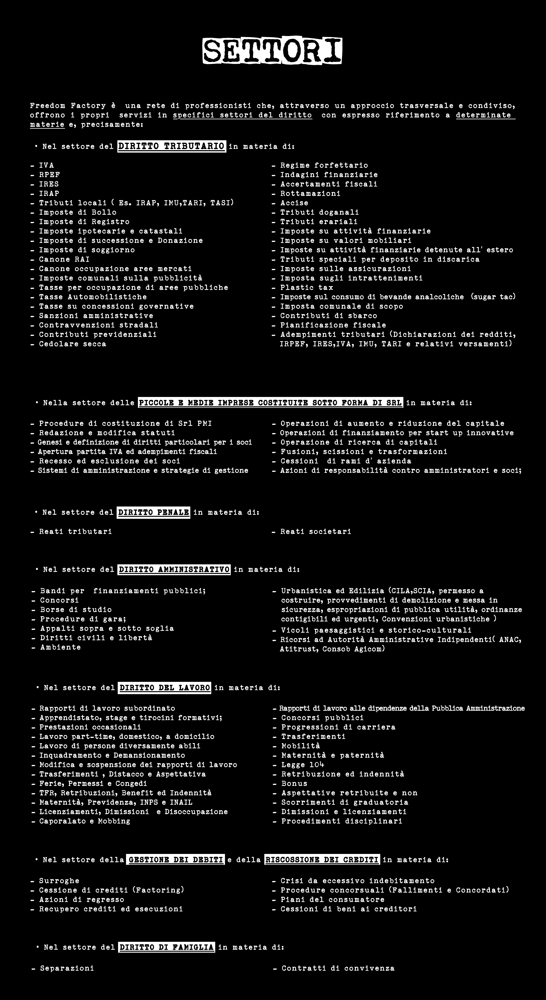

SETTORI
Freedom Factory e una rete di professionisti che, attraverso un approccio trasversale e condiviso, offre i propri servizi in specifici settori del diritto - ore segue riferimento e dettagliate indicazioni e presupposizioni:
* Nel settore del DIRITTO TRIBUTARIO in materia di:
- IUU
- IRES
- IMU
- IVA
- Tributi locali (Ire, IRAP, IMU, TASI, TARI)
- Imposte di registro
- Imposte di capitali locali
- Imposte di successione e Donazione
- Imposte di fabbricazione
- Dazi doganali
- Cessione acquisizione aree servizi
- Rimborso imposta sul reddito
- Tasse per circoscrizioni di aree pubbliche
- Tributi Amministrativi
- Tariffe pubbliche o contributive
- Tariffe amministrative
- Entrate extra-tributarie
- Contributi previdenziali
- Imposte finanziarie
- Accertamento fiscale
- Imposte su attivita finanziarie
- Imposte su valori mobiliari
- Tassazione dell'attivita finanziaria aderente all'estero
- Rapporti finanziari e di rendite finanziarie
- Frode fiscale (tax fraud)
- Imposte sui consumi di bevande alcoliche (Sugar tax)
- Imposte di bollo
- Avvisi di accertamento e rettifica
- Cartelle di pagamento e avvisi di liquidazione
- Contravvenzioni e sanzioni amministrative
* Nelle settore del PICCOLE E MEDIE IMPRESE COSTITUITE SOTTO FORMA DI SRL in materia di statuto, atti fondativi, redazione e modifica statuti, aumenti e riduzioni di capitale, distribuzione di utili, sistemi di amministrazione, operazioni di finanziamento, fusioni, acquisizioni, scissioni, trasformazioni, cessioni di azienda e azioni di responsabilita.
* Nel settore del DIRITTO PENALE in materia di reati tributari, reati societari e reati fallimentari.
* Nel settore del DIRITTO AMMINISTRATIVO in materia di bandi, concorsi, accesso agli atti, procedure di gara, licenze, permessi, nulla-osta, urbanistica, edilizia, sanatorie, concessioni, pareri, conteggi ed espropri.
* Nel settore del DIRITTO DEL LAVORO in materia di rapporti di lavoro subordinato, autonomo e formativi, inquadramento, TFR, ferie, permessi, congedi, maternita, paternita, INPS, INAIL, licenziamento, mobbing, molestie, infortuni, malattie professionali e procedimenti disciplinari.
* Nel settore della GESTIONE DEI DEBITI e della DISCUSSIONE DEI CREDITI in materia di recupero crediti, piani del consumatore, accordi di ristrutturazione e accordi con i creditori.
* Nel settore del DIRITTO DI FAMIGLIA in materia di separazioni, divorzi, contratti di convivenza e patti di famiglia.